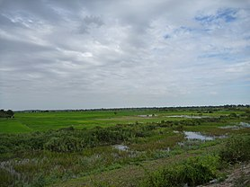
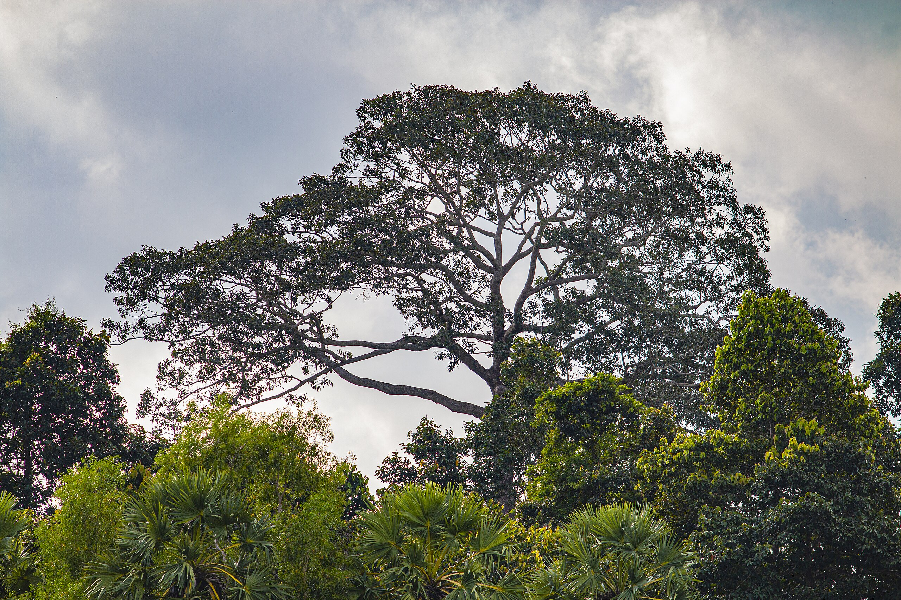

Prey Veng (Khmer: ព្រៃវែង 'High Forest') is a province (khaet) of Cambodia. The capital is Prey Veng. With a population of 1.1 million people, it is the third most populous province. This densely populated agricultural region is located on the east bank of the Mekong. The name literally means "long forest" in khmer, but the last great forests have gradually disappeared there over 30-year to provide for agricultural land.
 